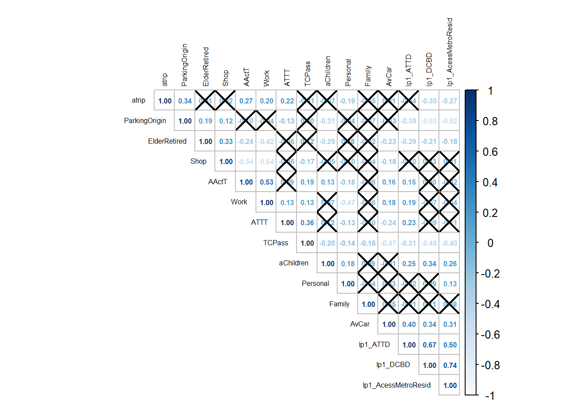
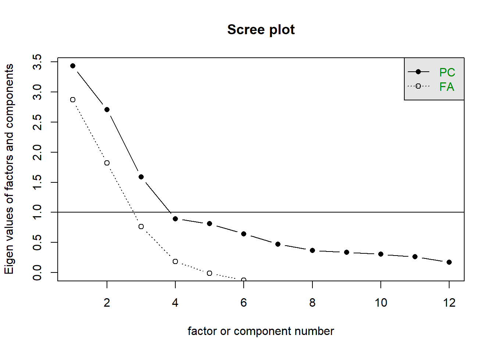
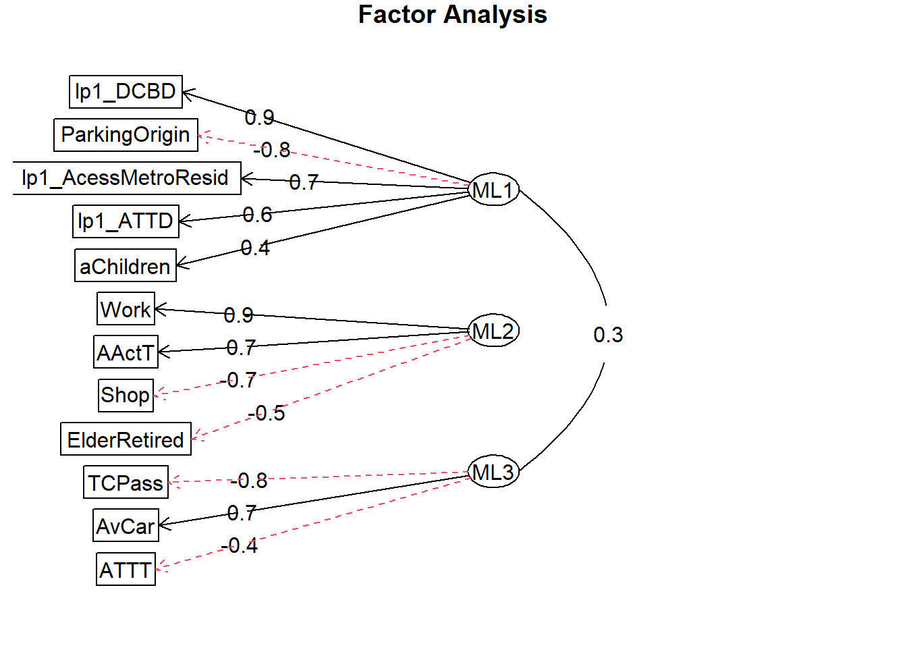

4 Exploratory Factor Analysis
All of the IVs, except Family, are correlated to at least one other IV at a correlation Pearsons’ coefficient equal or higher than .3 (Figure 4.1).
Figure 4.1: Correlation Matrix
The Bartlett test with the full dataset was significant and we rejected the null hypothesis that the variables are orthogonal (χ2(91): 15983.3, p.value <.01). The KMO (.66) suggested a strong relationship among the variables. We then removed Family and Personal whose KMOs were significantly lower than .5 (Table 4.1) . The results of the Bartlett test (χ2(66): 1313.77, p.value <.01) and of the KMO (.76) improved. Consequently, we have deemed the scaled and transformed dataset suitable for factor analysis. The screeplot suggests that 3-4 factors should be extracted (Figure 4.2).
| Rsq | KMO | Rsq | KMO | |
|---|---|---|---|---|
| AActT | 0.50 | 0.88 | 0.50 | 0.78 |
| aChildren | 0.22 | 0.75 | 0.20 | 0.81 |
| ATTT | 0.39 | 0.57 | 0.39 | 0.54 |
| AvCar | 0.45 | 0.77 | 0.45 | 0.76 |
| ElderRetired | 0.33 | 0.90 | 0.33 | 0.86 |
| Family | 0.15 | 0.27 | 0.00 | 0.00 |
| ParkingOrigin | 0.51 | 0.71 | 0.00 | 0.00 |
| Personal | 0.65 | 0.26 | 0.50 | 0.72 |
| Shop | 0.72 | 0.46 | 0.45 | 0.81 |
| TCPass | 0.54 | 0.73 | 0.53 | 0.72 |
| Work | 0.82 | 0.54 | 0.60 | 0.73 |
| lp1_DCBD | 0.74 | 0.76 | 0.74 | 0.75 |
| lp1_ATTD | 0.61 | 0.75 | 0.61 | 0.75 |
| lp1_AcessMetroResid | 0.56 | 0.87 | 0.56 | 0.86 |
Figure 4.2: Scree Plot
We ran factor analysis with combinations of varimax and oblimin rotations and Maximum Likelihood and Minimum Residual Methods, with 3 and 4 factors.The most interpretable results had 3 factors only (Figure 4.3).
Figure 4.3: FA Diagram
Fitting a linear regression with the extracted factors, all 3 extracted factors were statistically significantat at a p.value<.01 in only one of the solutions: the Maximum Likelihood method and oblimin rotation . Hence, our final solution was the 3 factors with Maximum Likelihood method and oblimin rotation (Tables 4.2 and 4.3).
|
|
The labeled factors (Table 4.4). correspond to 3 of the 4 drivers of average daily trip per person identified in the “A priori knowledge” - Section 1.3. Only the intra/intermunicipality trips was not reflected in the extracted fact.
| Label | Main Independent Variables | Description |
|---|---|---|
| Peripherality | lp1_DCBD, ParkingOrigin, lp1_AcessMetroResid, lp1_ATTD, aChildren | Factor related to the peripherality of the interviewee’s residence zone. |
| Activity Level | Work, Shop, lp1_AActT, ElderRetired | Factor related to the interviewee’s level of activity. |
| Private Transport | TCPass, AvCar, ATTT | Factor related to the use of private over public transportation. |